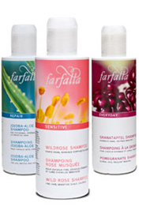
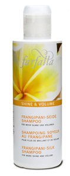
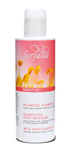
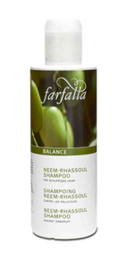
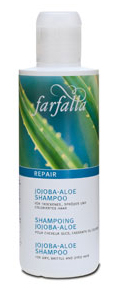
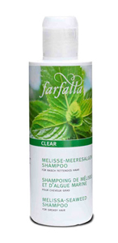

|
|
Natural Hair Care
For gentle skin and hair care
Farfalla shampoos and shower gels are based on a vegetable-derived detergent extracted from natural raw materials (coconut oil / wood sugar), and all ingredients comply with controlled natural cosmetics guidelines. For each hair type, we have selected the most suitable vegetable extracts and a well-coordinated blend of natural essential oils as the active fragrant ingredients.
|
 |
Shampoos
Shine & Volume: Frangipani-silk Shampoo
For more shine and volume
Natural shampoo for more shine and volume. Silkily lustrous hair and more volume? Feel the difference – silk proteins give a wonderful shine and more lasting volume. With the delicate scent of the frangipani blossom. Back up the new fullness with farfalla volume hairspray. |
 |

|
Sensitive: Wild Rose Shampoo
For fine hair, sensitive scalp, children
Extra-mild natural shampoo. Especially for fine hair, children and sensitive scalps. Extract of rose soothes and harmonises the sensitive scalp. For healthy, beautiful hair, from the roots to the tips. For natural shine. No synthetic aroma, colour or preservatives. No PEGs, silicone or SLS.
|
Everyday: Pomegranate Shampoo
For normal hair, frequent washing
Natural shampoo for frequent washing.
Precious active ingredients from the pomegranate protect your hair from drying out, even with daily washing. The hair feels more elastic, manageable and well-groomed. For ideal moisturising and a natural shine. |
|

|
Balance: Neem-rhassoul Shampoo
Against dandruff
Natural shampoo to combat dandruff. This special shampoo based on extract of neem, as well as Moroccan clay, lastingly combats dandruff. With the essential oils of juniper wood, thyme and rosemary as selected active ingredients. For dandruff-free hair and a well-groomed appearance.
|
Repair: Jojoba-aloe Shampoo
For dry, brittle and dyed hair
Natural shampoo for dry and dyed hair.
Extracts of jojoba and aloe vera provide moisture and important building materials for the hair. For manageable, smooth hair, that gleams with a natural shine. Essential oils of citrus fruits revitalise the scalp and make for a lively, healthy head of hair. |
 |

|
Clear: Melissa-seaweed Shampoo
For greasy hair
Natural shampoo for greasy hair.
Fucus vesiculosus is the name of the seaweed from Brittany in this shampoo, which stops the
hair from becoming greasy. The hair feels light and well-groomed, and has a silky shine. With
the precious scent of melissa.
|
Top >
|
|